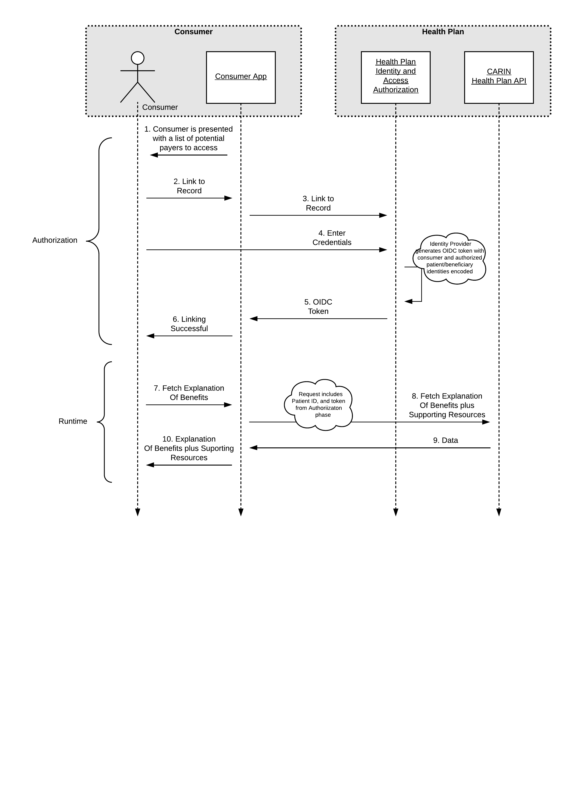
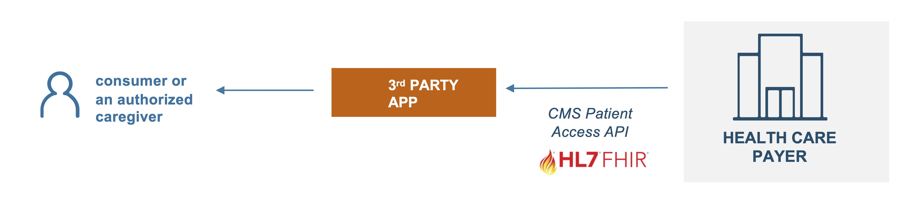

CARIN Consumer Directed Payer Data Exchange (CARIN IG for Blue Button®)
0.1.10 - STU1
CARIN Consumer Directed Payer Data Exchange (CARIN IG for Blue Button®)
0.1.10 - STU1
CARIN Consumer Directed Payer Data Exchange (CARIN IG for Blue Button®) - Local Development build (v0.1.10). See the Directory of published versions
| Term | Definition |
| Subscriber | An individual or entity that selects benefits offered by an entity, such as an employer, government, or insurance company |
| Dependent | An individual, other than the subscriber, who has insurance coverage under the benefits selected by a subscriber |
| Member | Any individual covered by the benefits offered by an entity, such as an employer or insurance company |
| Beneficiary | Any individual that selects or is covered by benefits provided by government programs |
| Patient |
An individual who has received, is receiving or intends to receive health care services. (Health care services as defined by federal and state regulations.) |
| Personal Representative | Per the HIPAA privacy regulations at 45 CFR 164.502(g), a personal-representative is someone authorized under state or other applicable law to act on behalf of the individual in making health care related decisions (such as a parent, guardian, or person with a medical power of attorney) |
| Coordination of Benefits | The process of determining which of two or more insurance policies will have the primary responsibility of processing/paying a claim and the extent to which the other policies will contribute |
| Payer |
Public or private party which offers and/or administers health insurance plan(s) or coverage and/or pays claims directly or indirectly. Examples include:
|
| Encounter data vs Claims | Encounter data means the information or data relating to the receipt of any item(s) or service(s) by an enrollee under a contract between a State and a managed care plan. Encounter data are conceptually equivalent to the paid claims records that state Medicaid agencies create when they pay providers on a FFS basis |
| EOB.careteam | The members of the team or organization who contributed to the service to the patient submitted on the claim by the billing provider to the payer |
| CareTeam Resource | The Care Team includes all the people and organizations who plan to participate in the coordination and delivery of care for a patient |
Consumer-directed exchange occurs when a consumer or an authorized caregiver invokes their HIPAA Individual Right of Access (45 CFR 164.524) and requests their digital health information from a HIPAA covered entity (CE) via an application or other third-party data steward.
 Actors:
Flow:

IG © 2020+ HL7 Financial Management Working Group. Package hl7.fhir.us.carin-bb#0.1.10 based on FHIR 4.0.1. Generated 2020-11-12
Links: Table of Contents |
QA Report
| Version History |
Search |
 |
Propose a change
|
Propose a change